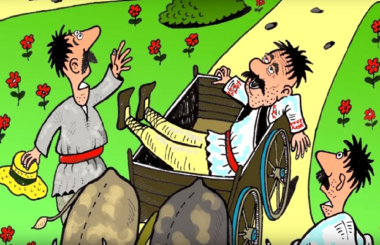
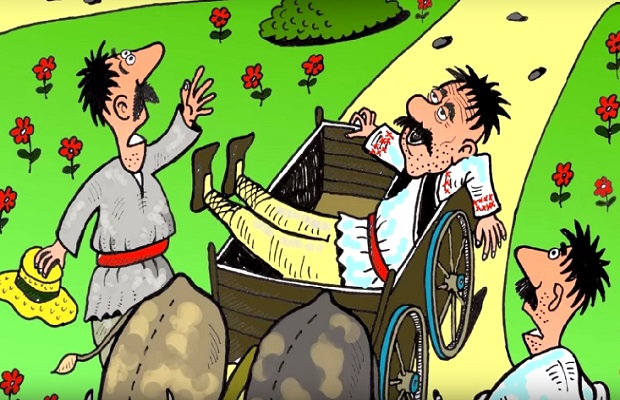
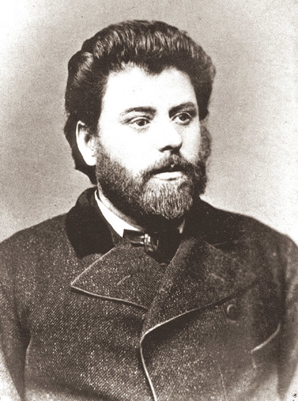

Povestea unui om lenes
 

Cucoana atunci, cu toată bunăvoinţa ce avea, se lehămeteşte şi de binefacere şi de tot, zicând:
– Oameni buni, faceţi dar cum v-a lumina Dumnezeu!
Iar sătenii duc pe leneş la locul cuvenit, şi-i fac feliul.
Şi iacă aşa au scăpat şi leneşul acela de săteni şi sătenii aceia de dânsul.
Mai poftească de acum şi alţi leneşi în satul acela, dacă le dă mâna şi-i ţine cureaua.
Ş-am încălecat pe-o şea, şi v-am spus povestea aşa.
Autor: Ion Creanga
